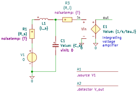

"A1_noise_feedbacknetwork"
.source V1
.detector V_out
C1 1 0 C value={C_s} vinit=0
E1 out 0 in 0 E value={1/s/tau_i}
L1 2 1 L value={L_s} iinit=0
R1 2 3 R value={R_s} noisetemp={T} noiseflow=0 dcvar=0 dcvarlot=0
R3 1 in R value={R_i} noisetemp={T} noiseflow=0 dcvar=0 dcvarlot=0
V1 3 0 V value=0 noise=0 dc=0 dcvar=0
.end
| RefDes | Nodes | Refs | Model | Param | Symbolic | Numeric |
|---|---|---|---|---|---|---|
| C1 | 1 0 | C | value | $C_{s}$ | $C_{s}$ | |
| vinit | $0$ | $0$ | ||||
| E1 | out 0 in 0 | E | value | $\frac{1}{s \tau_{i}}$ | $\frac{1}{s \tau_{i}}$ | |
| L1 | 2 1 | L | value | $L_{s}$ | $L_{s}$ | |
| iinit | $0$ | $0$ | ||||
| R1 | 2 3 | R | value | $R_{s}$ | $R_{s}$ | |
| noisetemp | $T$ | $300$ | ||||
| noiseflow | $0$ | $0$ | ||||
| dcvar | $0$ | $0$ | ||||
| dcvarlot | $0$ | $0$ | ||||
| R3 | 1 in | R | value | $R_{i}$ | $R_{i}$ | |
| noisetemp | $T$ | $300$ | ||||
| noiseflow | $0$ | $0$ | ||||
| dcvar | $0$ | $0$ | ||||
| dcvarlot | $0$ | $0$ | ||||
| V1 | 3 0 | V | value | $0$ | $0$ | |
| noise | $0$ | $0$ | ||||
| dc | $0$ | $0$ | ||||
| dcvar | $0$ | $0$ |
| Name | Symbolic | Numeric |
|---|---|---|
| $T$ | $300$ | $300$ |
| Name |
|---|
| $\tau_{i}$ |
| $C_{s}$ |
| $R_{i}$ |
| $L_{s}$ |
| $R_{s}$ |
Go to A1_noise_feedbacknetwork_index
SLiCAP: Symbolic Linear Circuit Analysis Program, Version 4.0.10 © 2009-2025 SLiCAP development team
For documentation, examples, support, updates and courses please visit: analog-electronics.tudelft.nl
Last project update: 2026-02-23 08:40:49